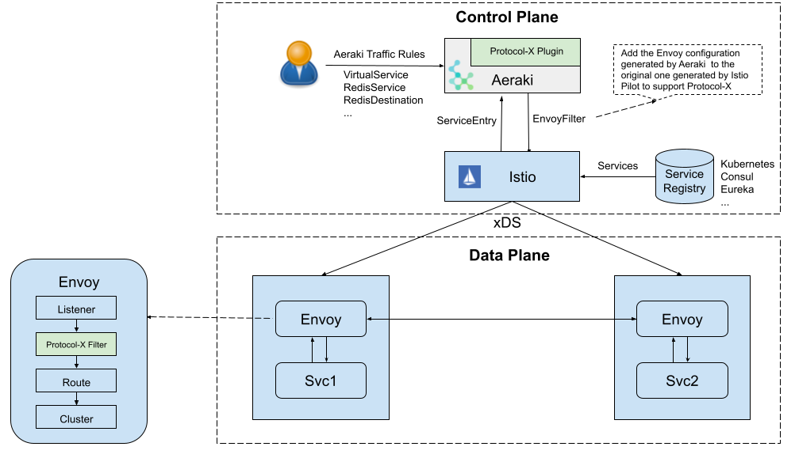

Aeraki基本概念
我们为什么需要Aeraki
虽然Istio已经成为了ServiceMesh的控制面标准，但是在协议方面，只有http协议是一等公民。只有对与HTTP协议提供了完善的功能支持，但是在我们实际的场景中会存在着许多其他的私有协议，但是我们只能被迫使用TCP协议来进行基本的请求路由或者透传，无法发挥出Istio强大的流量管理等功能。
虽然我们可以通过一些方式来拓展Istio，比如我们可以通过修改Istio代码来实现新的协议处理和下发，接着你还需要在Pilot修改 xds 代码库的协议，根据我们的服务定义和路由规则下发给Envoy，最后你还要在 Envoy 中实现相应的 Filter 来完成协议的解析和路由等功能。但是如果这样的话我们就需要自己维护一个Istio的私有分支，同时也要兼容和同步Istio社区的代码迭代，成本也非常大。
Aeraki则是一个Istio的协议拓展插件，可以帮助我们根据ServiceEntry和 Aeraki 流量规则生成 Envoy 配置，并采用 EnvoyFilter 将生成的配置推送到 Istio 中，以这种无侵入方式来拓展Istio对其他七层私有协议支持。
Aeraki介绍
Aeraki在希腊语中是“微风”，作者希望通过 Aeraki 这股微风能帮助 Istio 在云原生的旅程中航行得更远。github传送门: aeraki

Aeraki是控制面的一个独立组件，会自动生成协议相关的缺省配置，减少了我们手工创建和维护EnvoyFilter的工作。对与Dubbo和Thrift可以采用virtualService和DestinationRule 这些Istio原生的CRD去管理；而对于其他的非RPC协议，Aeraki定义了一些新的CRD去管理类似redis的服务。
安装
官方提供了对应的安装脚本，执行即可获得带有Aeraki插件的Istio集群和对应的Demo程序。
aeraki/demo/install-demo.sh如果已经有了Istio环境，只想安装aeraki插件，将将install-demo换成下面脚本
BASEDIR=$(dirname "$0") SCRIPTS_DIR=$BASEDIR/test/e2e/scripts COMMON_DIR=$BASEDIR/test/e2e/common export ISTIO_VERSION=1.9.1 export BUILD_TAG=latest bash ${SCRIPTS_DIR}/aeraki.sh # 部署我们需要的对应的样例 #bash $BASEDIR/demo/dubbo/install.sh #bash $BASEDIR/demo/thrift/install.sh #bash ${BASEDIR}/demo/kafka/install.sh
Aeraki的dubbo demo需要istio开启DNS解析功能，安装需要开启istioctl install --set profile=demo --set meshConfig.defaultConfig.proxyMetadata.ISTIO_META_DNS_CAPTURE='\"true\"'